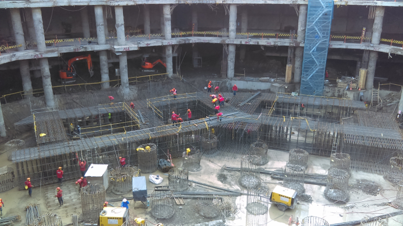
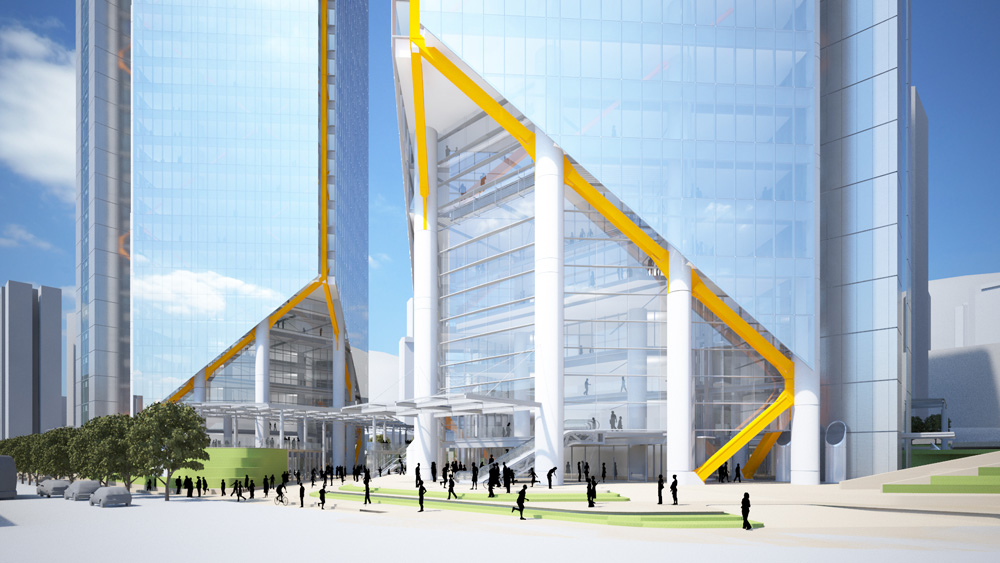
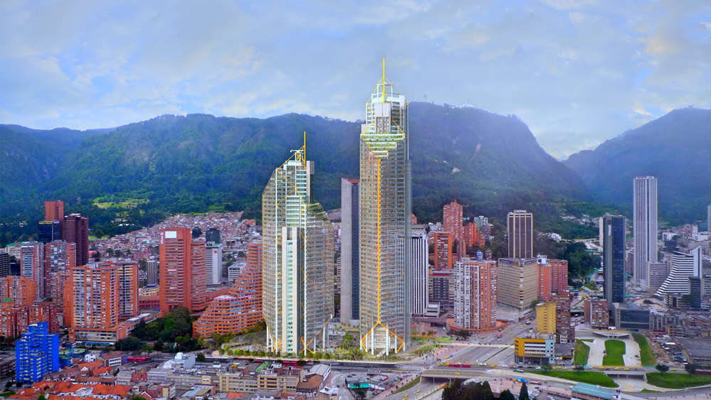
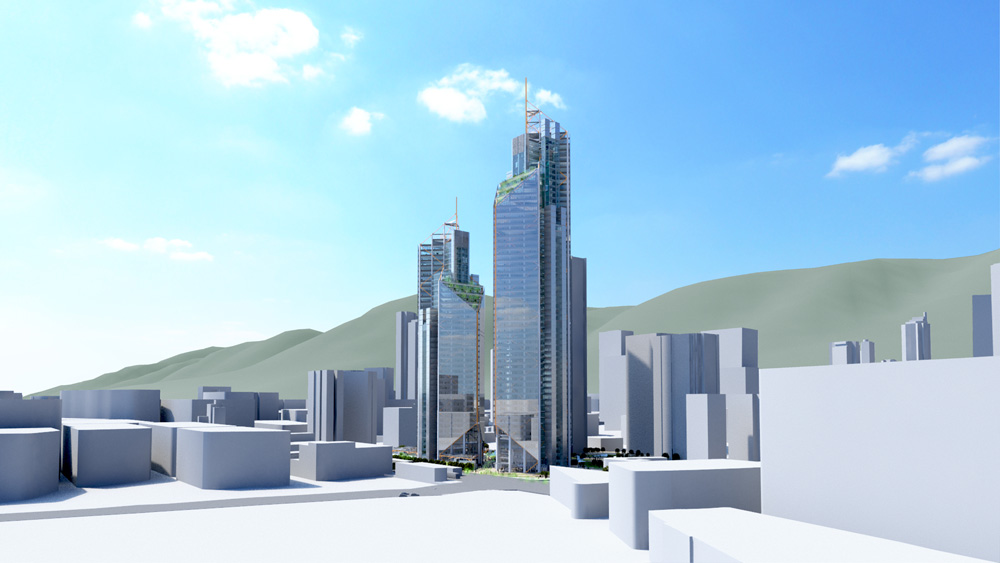
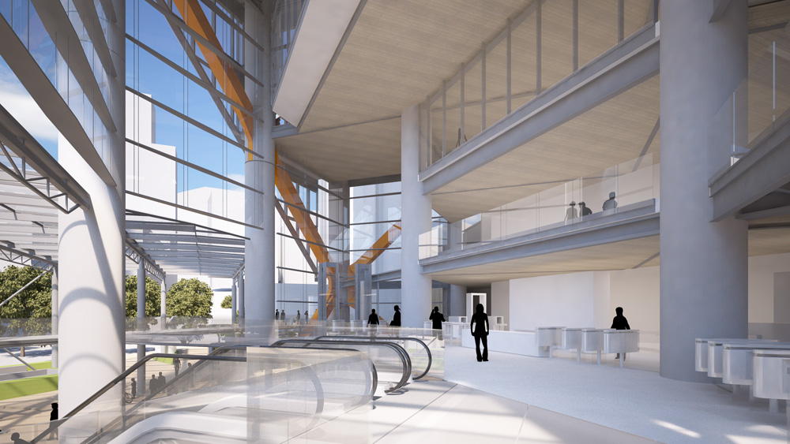
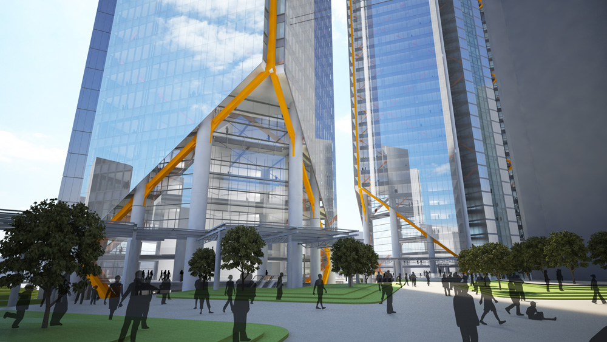

En el Centro Internacional en la intersección de la calle 26 con Avenida Caracas se levantará esta construcción que busca integrar en un solo lugar oficinas, comercio y hotelería haciendo que esta zona del centro de la ciudad se revitalice, incluso durante las horas de la noche de igual forma como pasa en las grandes ciudades del mundo.
 Serán dos torres una de 44 pisos con 200 metros de altura y una de 59 plantas que alcanzará los 270 metros de altura en principio, la primera de ellas con una inversión de 250 millones de dólares con entrega en 2018.
Allí se tendrá la oportunidad de alquilar espacios hasta de 1.800 metros cuadrados por piso, administrados y operados por un solo arrendador; el vidrio que se utilizará equivale a quince veces el estadio El Campín de Bogotá, así como 21 mil toneladas de acero.
 En su diseño han intervenido el arquitecto italo-británico Richard Rogers y el arquitecto colombiano Giancarlo Mazzanti. El lugar donde se desarrolla el proyecto era un lote destinado a parqueaderos de la zona; además allí se encontraba el Centro de Convenciones Gonzalo Jiménez de Quesada, el cual será reemplazado durante la construcción.
 En el año 2007 el Grupo Neme adquirió el lote en la Avenida Caracas con Avenida Eldorado, que era propiedad de Luis Carlos Sarmiento Angulo, donde alguna vez se pensó construir la sede del Banco de la República. En el lugar se pretendía construir un complejo inmobiliario de poca altura, pero cuando se preparaba la etapa de diseño apareció la posibilidad de adquirir el lote adjunto. El Ministerio de Comercio, Industria y Turismo decidió vender el Centro de Convenciones Gonzalo Jiménez de Quesada y el parqueadero contiguo. La unión de todos los lotes permitió conformar uno solo de 17 000 m² con el que se empezó a formar la idea de construir un proyecto mucho más grande que el que se tenía pensado inicialmente.